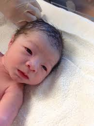
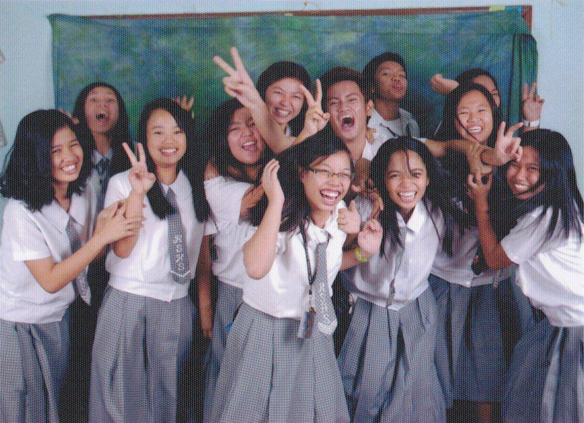
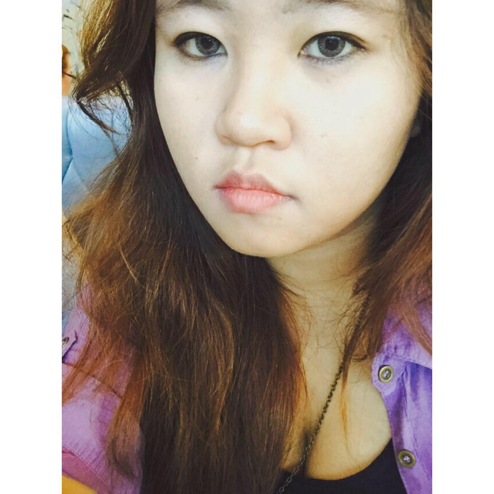

Disclaimer:This picture is not me. This picture is included here to help you picture what a baby looks like.
I was born November 1 1995 (scary) to a Taiwanses father and a Filipino mother. My childhood was normal enough(I dont have anyone to compare it to), I loved to play and apparently I was a bald baby (My mom loved cutting my hair like a boy). Chinese eyes on a bald baby, you don't know how many shaolin jokes I had endured over the course of my childhood. That's about it
I went to Regional Science High School where I made a lot of friends. , they all go to diffirent colleges now but we meet from time to time when I go back home. The four years of my high school was fun and educational. Loved it
This is what I look like now , my life is going great. College life is treating me good though its a bit stressful sometimes, balancing orgs and academics is a full time job lol.
In the future, I plan to be super rich and not have to worry about anything or get bitten by a vampire, whichever comes first.